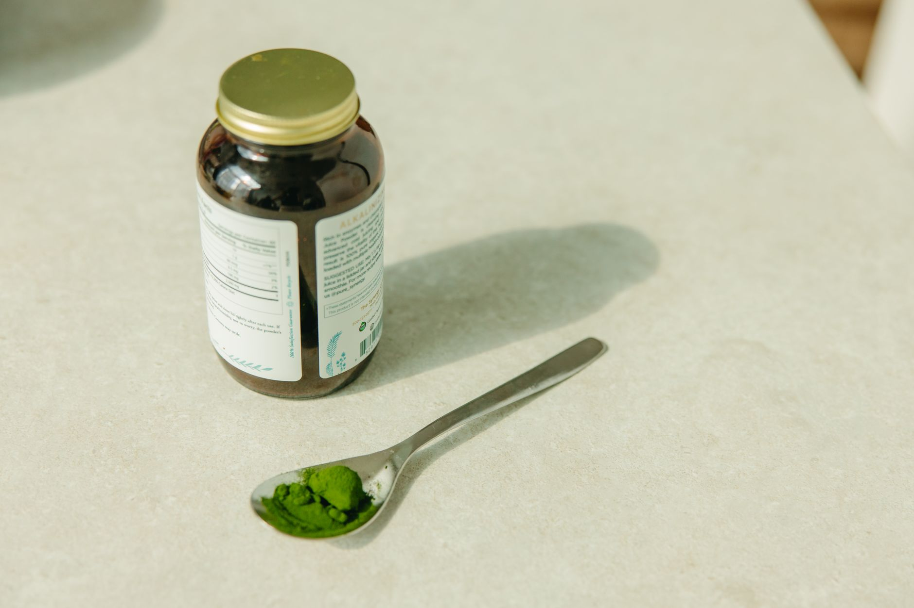

Inicio/Artículos/Suplementos · Piel y articulaciones
Colágeno: qué es, para qué sirve y tipos
8 min de lectura · Actualizado 4 de septiembre de 2026 · Por Miguel Lopez

El colágeno es la proteína más abundante del cuerpo humano (hasta un 30% de toda la proteína corporal) y también uno de los suplementos que más ha crecido en los últimos años, prometido para todo, desde piel más firme hasta articulaciones sin dolor. Entre tanto polvo, cápsula y "colágeno bebible", conviene separar lo que es fisiología básica de lo que es marketing: qué produce realmente el cuerpo, qué le pasa con la edad, qué tipos de colágeno existen y, sobre todo, qué evidencia real hay detrás de tomarlo como suplemento.
Qué es el colágeno
El colágeno es una proteína estructural que forma parte de la piel, los músculos, los huesos, los tendones, los ligamentos, los órganos, los vasos sanguíneos y el revestimiento intestinal. Está compuesto principalmente por los aminoácidos prolina, glicina e hidroxiprolina, organizados en una estructura de triple hélice, y su producción requiere cantidades adecuadas de vitamina C, zinc, cobre y manganeso. Actúa básicamente como el "andamiaje" que da estructura y elasticidad a los tejidos del cuerpo.
El cuerpo produce cada vez menos colágeno con el paso de los años, el colágeno existente se degrada más rápido y su calidad disminuye. Las mujeres experimentan una reducción especialmente marcada tras la menopausia, relacionada con la caída de estrógenos, y a partir de los 60 años esta disminución afecta prácticamente a todo el mundo. Los signos visibles incluyen arrugas y flacidez en la piel, pérdida de volumen facial, debilidad muscular, rigidez en tendones y ligamentos, dolor articular y, en ocasiones, molestias digestivas. Factores como el tabaco, el exceso de azúcar y carbohidratos refinados, y la exposición solar sin protección se asocian con una aceleración de este proceso de deterioro.
Tipos de colágeno: I, II, III y más
Se han identificado unos 28 tipos distintos de colágeno, pero unos pocos concentran la mayor parte de la investigación. El tipo I es, con diferencia, el más abundante (cerca del 90% del colágeno corporal) y da estructura a la piel, los huesos, los tendones y los ligamentos; es el tipo que más se relaciona con el aspecto de la piel en los estudios. El tipo II se concentra en el cartílago elástico y está especialmente vinculado a la salud articular, por lo que suele ser el que se estudia en investigación sobre articulaciones. El tipo III aparece en músculos, arterias y órganos, a menudo junto al tipo I. Los tipos IV y V tienen papeles más específicos en capas de la piel, córneas, cabello y tejido placentario.
Qué dice la evidencia sobre la suplementación
La evidencia existe, pero es más limitada de lo que sugiere el marketing. Los péptidos de colágeno son considerados "posiblemente eficaces" en la literatura científica para mejorar la hidratación y la elasticidad de la piel, y algunos estudios también los asocian con menor dolor y mejor función articular en personas con artrosis de rodilla. En los ensayos con resultados positivos, la duración habitual de uso antes de observar cambios fue de 8 a 12 semanas de administración diaria.
Conviene matizar esta evidencia: en Estados Unidos, la FDA no regula los suplementos de colágeno, por lo que los fabricantes no están obligados a demostrar su eficacia ni su seguridad antes de venderlos, y buena parte de los estudios disponibles están financiados por la propia industria del suplemento, lo que invita a interpretar los resultados con cierta cautela.
Hidrolizado, péptidos y alternativas veganas
Si se comiera colágeno tal cual, el sistema digestivo lo descompondría en aminoácidos individuales, igual que con cualquier otra proteína, por lo que no llega "intacto" a la piel ni a las articulaciones. Por eso los suplementos se comercializan mayoritariamente como colágeno hidrolizado o péptidos de colágeno: colágeno animal (de vaca, pescado o cerdo, típicamente) fragmentado previamente en piezas más pequeñas que se absorben con más facilidad en el tracto digestivo; en la práctica, "hidrolizado" y "péptidos" son, en la mayoría de etiquetas, dos formas de llamar a lo mismo.
El colágeno en sí es siempre de origen animal: no existe el "colágeno vegano" propiamente dicho, porque las plantas no producen esta proteína. Lo que sí existen son suplementos que aportan los nutrientes que el cuerpo necesita para fabricar su propio colágeno (vitamina C, zinc, cobre, sílice, prolina, glicina), comercializados como "boosters". Esos mismos nutrientes están presentes en alimentos como cítricos, pimientos, frutos secos, legumbres y marisco, entre otros.
Efectos secundarios y seguridad
El colágeno hidrolizado se considera generalmente seguro, con efectos secundarios poco frecuentes y leves: sensación de pesadez o malestar digestivo, y en algunos casos mal sabor de boca. Al proceder principalmente de vaca, pescado o cerdo, no es apto para veganos ni vegetarianos, y su origen es relevante para personas con alergia al pescado o al marisco. No hay evidencia de que interactúe de forma relevante con medicamentos habituales, lo que lo sitúa entre los suplementos con menos contraindicaciones generales conocidas. Al tratarse de un producto no regulado con el mismo rigor que un medicamento, la calidad y la pureza pueden variar bastante de una marca a otra.
Grupos con menos evidencia de seguridad disponible
La relación entre el colágeno y las enfermedades autoinmunes que afectan al tejido conectivo (como el lupus, la artritis reumatoide o la esclerodermia) no está del todo clara en la literatura científica. La investigación de seguridad también es limitada en personas embarazadas o en periodo de lactancia, y el origen animal del producto (pescado, marisco, res) es un dato relevante para quienes tienen alergias alimentarias asociadas.
Conclusión
El colágeno es una proteína real y necesaria para la piel, los huesos y las articulaciones, y su declive con la edad también es un hecho fisiológico, no marketing. La evidencia sobre la suplementación respalda beneficios moderados —no espectaculares— para la hidratación de la piel y algunas molestias articulares, observados tras varias semanas de uso constante en los estudios disponibles. Buena parte de esa evidencia proviene de investigación financiada por la propia industria, lo que conviene tener presente al leer las promesas de marketing.
- ¿Qué es el colágeno?
- Es la proteína estructural más abundante del cuerpo, presente en la piel, los huesos, los tendones, los ligamentos y las articulaciones, entre otros tejidos.
- ¿Para qué sirve el colágeno?
- Da estructura y elasticidad a la piel, los huesos y las articulaciones, y participa en la reparación de tejidos por todo el cuerpo.
- ¿A qué edad empieza a bajar la producción de colágeno?
- De forma gradual desde relativamente pronto en la edad adulta, pero se acelera de forma notable en mujeres tras la menopausia y, en general, a partir de los 60 años.
- ¿Cuál es la diferencia entre colágeno tipo I, II y III?
- El tipo I (el más abundante) da estructura a piel, huesos y tendones; el tipo II se concentra en el cartílago y las articulaciones; el tipo III aparece en músculos, arterias y órganos.
- ¿Funciona de verdad el colágeno hidrolizado?
- La evidencia es moderada, no espectacular: se considera "posiblemente eficaz" para mejorar la hidratación y elasticidad de la piel, y se asocia con menos molestias en la artrosis de rodilla en algunos estudios.
- ¿Cuánto tarda en notarse el efecto del colágeno en los estudios?
- En los ensayos con resultados positivos, los participantes solían tomarlo a diario durante 8 a 12 semanas antes de que se observaran cambios en la piel.
- ¿Existe el colágeno vegano?
- No de forma directa: el colágeno siempre es de origen animal. Lo que existen son "boosters" veganos con los nutrientes (vitamina C, zinc, cobre, aminoácidos) que el cuerpo necesita para fabricar el suyo propio.
- ¿Qué alimentos contienen los nutrientes asociados a la producción de colágeno?
- Los ricos en vitamina C (cítricos, pimientos), zinc y cobre (marisco, frutos secos, legumbres) y en los aminoácidos prolina y glicina (carne, pescado, huevos).
- ¿Tiene efectos secundarios el colágeno?
- Es generalmente seguro; los efectos secundarios más comunes son leves, como sensación de pesadez digestiva o mal sabor de boca.
- ¿Es relevante la alergia al pescado para los suplementos de colágeno?
- Sí: buena parte de los suplementos de colágeno tienen origen marino, así que el origen animal específico del producto (bovino, porcino o marino) es un dato relevante para personas con este tipo de alergia.
- ¿El colágeno se asocia con mejoras en las articulaciones?
- Algunos estudios lo asocian con menos dolor y mejor función en personas con artrosis de rodilla, sobre todo investigación centrada en el colágeno tipo II.
- ¿Qué diferencia hay entre colágeno hidrolizado y péptidos de colágeno?
- En la práctica, ninguna relevante: son dos nombres distintos para el mismo proceso, colágeno animal fragmentado en piezas pequeñas para facilitar su absorción.
- ¿Qué factores se asocian con una pérdida de colágeno más rápida?
- El tabaco, el exceso de azúcar y carbohidratos refinados, y la exposición solar sin protección son los factores que la evidencia asocia más consistentemente con un deterioro más acelerado del colágeno.
Preguntas frecuentes
Fuentes
Enlaces a la fuente original, para que puedas comprobarlo por tu cuenta.
Miguel Lopez
Periodista independiente, no profesional sanitario. Escribe sobre tendencias de salud y fitness citando siempre las fuentes primarias, para que puedas comprobarlo por tu cuenta. Más sobre el sitio.